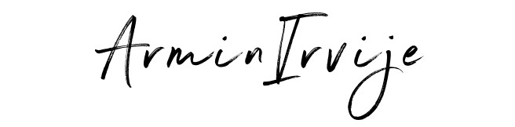

Hello! My name is Armin.
I am a UC Davis alumni currently pursuing my Master’s degree in Europe with a focus on Machine Learning. My experience spans neural network development, CI/CD pipelines and full-stack development. I am passionate about blending creativity and logic in software development to create solutions that improve people’s lives. My drive to learn in diverse and global environments has shaped my growth as both a developer and a collaborator. I am eager to continue taking on new challenges, contributing my skills, and collaborating with talented teams to make a positive impact.
Planned the first week-long philanthropy for the Delta Chi chapter, pioneering an Island-themed event that generated $1500 in charitable proceeds for the United Service Organization. This endeavor involved coordinating a series of diverse activities spanning several days, leveraging collaborative partnerships with local businesses and the university to curate a memorable student-centric experience.
PicturesStartup that develops a wearable sensor to monitor head impacts
Folk school where classes are taught from a global perspective
Cross-platform desktop app that automates image processing tasks.
Web portal for ESL service providers to track client attendance and analytics.
Mobile app for building positive habits and breaking negative ones.

Mental health app that provides personalized resources using ML classification.

Web app predicting player points per game using regression models.
Fine-tuned LLM for accurate medication information retrieval.
Built and evaluated a multilingual QA models for Arabic, Korean, and Telugu using state-of-the-art transformers..